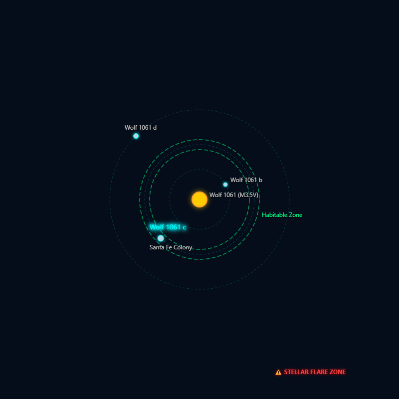

A Corporate Dystopia
In all reality, Demiurgic Dynamics is not an actual company. It is a fictional organization from a series of science fiction short stories, written by Yours Truly. The series takes place in a corporate dystopian society, in which AI has come to widespread use. The majority of the stories are set upon the Santa Fe colony world, and deal with the ethical issues that arise from the use and misuse of AI, and power.
Santa Fe Colony
The Santa Fe colony world is a temperate class 12 world that orbits the Wolf 1061 star, which is approximately 14 light years away from earth at the current moment. The world the colony is on (Wolf 1061-C) has about 3 times the mass of the earth and an orbital period of 18 days. There are also two uninhabitable sister planets in the system.
Demiurgic Dynamics Needs You!
Join our debuggers
In a world teeming with intelligent machines, someone is needed to track down and bring in dangerous malfunctional androids.
Ensure Quality in our products
Androids must have a guarantee of being safe, reliable, and totally obedient. Quality Ensurance employees stand on the front line of innovation to bring this dream to life.